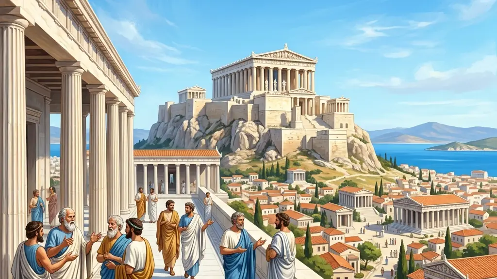
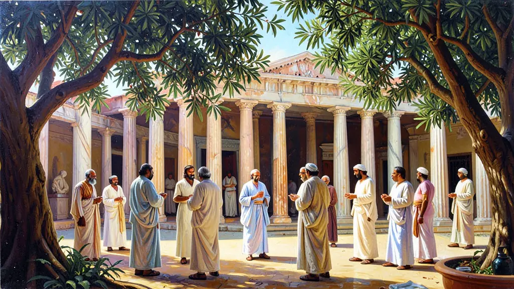
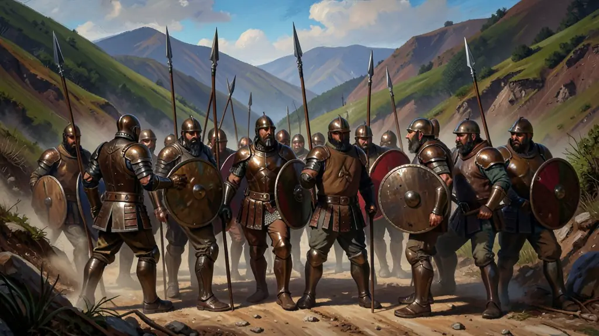

Capítulo 01
1. O Conceito de Pólis e o Espaço Público
A Pólis grega revolucionou a história ao transferir o poder do palácio do rei para a Ágora (praça pública). Na praça, a solução dos problemas coletivos não vinha de uma revelação divina, mas da retórica e do argumento. A política grega era, portanto, uma atividade intelectual e verbal. O cidadão era aquele que se dedicava ao bem comum acima dos interesses privados (idiotês - aquele que só cuida do próprio umbigo).

Capítulo 02
2. Democracia Ateniense: Direta e Seletiva
Com Clístenes, o 'Pai da Democracia', Atenas foi dividida em dez tribos geográficas para diluir o poder das famílias aristocráticas. O voto era exercido na Eclésia. Para garantir que todos os cidadãos — e não apenas os ricos — participassem, criou-se a mistoforia (uma ajuda de custo para quem ia exercer cargos públicos). Entretanto, apenas homens livres e filhos de atenienses podiam votar, deixando 90% da população de fora.

Capítulo 03
3. Esparta: A Disciplina do Guerreiro
Em Esparta, a vida era regida pela austeridade (laconicismo). Governada por uma Gerúsia (conselho de idosos) e dois reis (diarquia), a cidade era uma máquina de guerra. A mulher espartana tinha mais liberdade e educação física do que a ateniense, pois precisava gerar filhos fortes. A economia era mantida pelos Hilotas, uma classe de servos que tentava se rebelar constantemente contra a opressão militar espartana.

Capítulo 04
4. O Conflito Final: Guerra do Peloponeso
Após as Guerras Médicas (unindo gregos contra os Persas), Atenas e Esparta entraram em choque. A Liga de Delos (liderada por Atenas) e a Liga do Peloponeso (liderada pelas cidades espartanas) entraram em uma guerra civil de 27 anos que esgotou os recursos da Grécia. A vitória de Esparta foi amarga: a Grécia ficou tão enfraquecida que foi facilmente conquistada por Filipe II da Macedônia.
Capítulo 05
5. O Helenismo: A Grega pelo Mundo
Alexandre Magno, aluno de Aristóteles, não apenas conquistou o Egito e a Pérsia; ele misturou as culturas. O helenismo foi a disseminação do grego como língua universal, do teatro e das ciências gregas fundidas com a mística egípcia e babilônica. Cidades como Alexandria tornaram-se os novos centros do mundo, com bibliotecas e museus que preservaram o saber grego para o futuro Império Romano e para nós.
A pólis grega, enquanto unidade política soberana, foi o laboratório onde nasceu o conceito de cidadania e democracia no Ocidente. Diferente dos impérios orientais teocráticos, em Atenas o poder emanava (teoricamente) do corpo de cidadãos reunidos na Ágora. Contudo, essa liberdade era excludente: mulheres, estrangeiros (metecos) e a vasta massa de escravizados não possuíam direitos políticos, revelando que a democracia clássica era um privilégio de uma minoria aristocrática ou proprietária de terras.
Os Jogos Olímpicos e a religião antropomórfica serviam como cimento cultural para os gregos, que, apesar de politicamente fragmentados em centenas de cidades-estado, compartilhavam uma identidade Pan-helênica. A crença de que os homens e os deuses possuíam a mesma forma e sentimentos (ainda que os deuses fossem imortais) impulsionou a valorização do corpo humano e da razão, as bases do humanismo clássico que influenciaria o Renascimento e a Ilustração séculos depois.
O conflito entre Atenas (o poder marítimo e democrático) e Esparta (o poder terrestre e aristocrático), culminando na Guerra do Peloponeso, demonstrou os limites do imperialismo grego. A exaustão causada por essas lutas internas abriu caminho para a conquista macedônica por Alexandre, o Grande, dando início ao período Helenístico. Este período foi marcado pela fusão da cultura grega com a oriental, criando um mundo cosmopolita onde o conhecimento científico e a filosofia se expandiram muito além das fronteiras da península balcânica.
Fonte: FINLEY, Moses I. O Mundo de Ulisses. Lisboa: Presença, 1998.
Atividades interativas
Questões para fixar
A cidadania em Atenas clássica era privilégio de um grupo seleto. Eram considerados cidadãos apenas os:
A Guerra do Peloponeso (431-404 a.C.) teve como uma de suas principais causas: